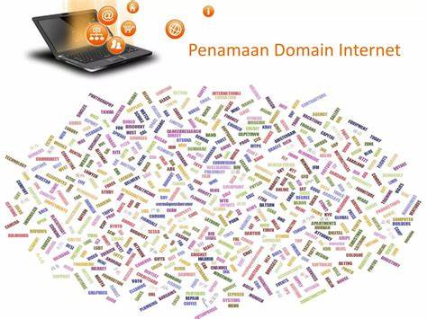

Penjelasan Tentang Domain
Domain adalah alamat unik yang digunakan untuk mengakses sebuah website di internet,
seperti www.liputan6.com atau www.google.com. Domain berfungsi sebagai
identitas digital yang memudahkan pengguna mengenali dan mengunjungi situs tertentu tanpa harus mengingat alamat IP.
Domain juga berperan penting dalam membangun kepercayaan dan profesionalitas. Misalnya, perusahaan sering
menggunakan domain khusus seperti .co.id untuk menunjukkan asal dan kredibilitas bisnis mereka.

Penjelasan Tentang Hosting
Hosting adalah layanan yang digunakan untuk menyimpan data dan file website agar bisa
diakses secara online. Semua file seperti HTML, gambar, dan CSS disimpan di server milik penyedia hosting.
Tanpa hosting, website tidak dapat diakses di internet. Hosting dapat diibaratkan sebagai rumah bagi seluruh
isi website. Saat seseorang mengetik alamat domain, data yang tersimpan di hosting akan dikirim ke browser pengguna.
Jenis-Jenis Domain Extensions
Ekstensi domain atau domain extensions adalah akhiran dari nama domain yang menunjukkan jenis atau
tujuan website. Berikut beberapa contoh umum yang sering digunakan:
- .com — digunakan untuk tujuan komersial.
- .org — untuk organisasi nirlaba.
- .net — awalnya untuk jaringan, kini umum digunakan.
- .id — domain khusus untuk Indonesia.
- .sch.id — digunakan oleh lembaga pendidikan sekolah di Indonesia.
Layanan Penyedia Hosting & Domain di Indonesia
Di Indonesia terdapat berbagai penyedia layanan hosting dan domain dengan fitur serta harga yang bervariasi.
Berikut beberapa yang populer:
- Niagahoster — performa tinggi, dukungan 24 jam.
- Rumahweb — penyedia lokal terpercaya sejak lama.
- Hostinger — harga terjangkau dan mudah digunakan.
- Domainesia — fitur lengkap dengan bonus SSL gratis.
Layanan tersebut membantu pengguna dalam membeli domain, mengatur DNS, dan mengelola hosting agar website
dapat berjalan lancar dan aman.